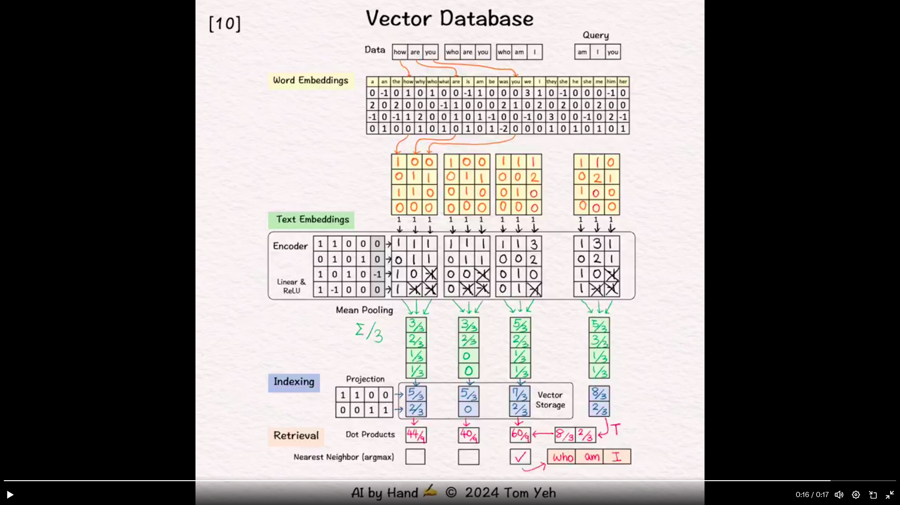

.png)
Embedding
Refer Embedding
How it works
A dataset of three sentences, each has 3 words (or tokens)
- In practice, a dataset may contain millions or billions of sentences.
- The max number of tokens may be tens of thousands (e.g., 32,768 mistral-7b).
Process “how are you”
Word Embeddings
- For each word, look up corresponding word embedding vector from a table of 22 vectors, where 22 is the vocabulary size.
- In practice, the vocabulary size can be tens of thousands. The word embedding dimensions are in the thousands (e.g., 1024, 4096)
Encoding
- Feed the sequence of word embeddings to an encoder to obtain a sequence of feature vectors, one per word.
- Here, the encoder is a simple one layer perceptron (linear layer + ReLU)
- In practice, the encoder is a transformer or one of its many variants.
Mean Pooling
- Merge the sequence of feature vectors into a single vector using “mean pooling” which is to average across the columns.
- The result is a single vector. We often call it “text embeddings” or “sentence embeddings.”
- Other pooling techniques are possible, such as CLS. But mean pooling is the most common.
Indexing
- Reduce the dimensions of the text embedding vector by a projection matrix. The reduction rate is 50% (4→2).
- In practice, the values in this projection matrix is much more random. The purpose is similar to that of hashing, which is to obtain a short representation to allow faster comparison and retrieval.
- The resulting dimension-reduced index vector is saved in the vector storage.
Process “who are you”
- Repeat Word Embeddings to indexing
Query: “am I you”
- Repeat Word Embeddings to indexing
- The result is a 2-d query vector.
Dot Products
- Take dot product between the query vector and database vectors. They are all 2-d.
- The purpose is to use dot product to estimate similarity.
- By transposing the query vector, this step becomes a matrix multiplication.
Nearest Neighbor
- Find the largest dot product by linear scan.
- The sentence with the highest dot product is “who am I”
- In practice, because scanning billions of vectors is slow, we use an Approximate Nearest Neighbor (ANN) algorithm like the Hierarchical Navigable Small Worlds (HNSW).

algorithms commonly used for similarity search indexing
- Product quantization (PQ)
- Locality sensitive hashing
- Hierarchical navigable small world (HNSW
How to reduce the optimize the vector embedding
- Principal component analysis : reduce the vector dimension and store but not efficient
- Matryoshka Representation Learning :
- Binary Quantization : quantization in models where you reduce the precision of weights, quantization for embeddings refers to a post-processing step for the embeddings themselves. In particular, binary quantization refers to the conversion of the
float32values in an embedding to 1-bit values, resulting in a 32x reduction in memory and storage usage. - For more check here
DIfferet distance calculation algorithm
| Metric | When to Use | Why to Use |
|---|---|---|
| Cosine Similarity | - Text data (e.g., TF-IDF, word embeddings) | - Measures the angle between vectors, ignoring magnitude |
| - Document similarity, sentence comparison | - Focuses on the direction of vectors, useful for comparing content (e.g., semantic meaning) | |
| - High-dimensional, sparse data (e.g., NLP, recommender systems) | - Magnitude-insensitive, so works well with documents of different lengths or sparse features | |
| Dot Product | - When both magnitude and direction are important | - Measures both magnitude and direction of vectors, useful when frequency or importance matters |
| - Frequency-based vector representations (e.g., Bag-of-Words, TF) | - Computationally simpler than cosine similarity; no need for normalization if magnitudes matter | |
| - Quick similarity calculation (e.g., in recommendation systems) | - Sensitive to vector magnitude, works well for scoring based on term frequencies or numerical values | |
| Euclidean Distance | - When the absolute difference between vectors is important (e.g., spatial data, feature vectors) | - Measures the straight-line distance between vectors in a space, sensitive to scale differences |
| - Clustering, regression tasks, or other geometric distance-based problems | - Sensitive to scale; accounts for magnitude differences, great for real-valued, continuous data | |
| - Works well for dense vectors where absolute differences matter | - Intuitive interpretation as “distance” in space |
- Cosine Similarity and Euclidean Distance
- Graph-Based RAG
- Exact Nearest Neighbor (k-NN) Search
- Hierarchical Navigable Small Worlds (HNSW): A popular ANN algorithm that constructs a graph-like structure for fast similarity searches. It’s highly scalable and suited to high-dimensional data.
- Product Quantization (PQ): Used to reduce storage requirements and speed up searches by dividing vectors into smaller, quantized components.
- Locality-Sensitive Hashing (LSH): This algorithm hashes input vectors so that similar vectors map to the same hash, allowing fast lookup based on hash values rather than full comparison
- BM25 (Best Matching 25) Unlike vector-based search, which relies on embeddings, BM25 is a term-based algorithm that ranks documents based on the presence and frequency of query terms in the documents.
Note: The fundamental principle for choosing similarity metrics is to match the metric used during embedding model training. For instance, if an embedding model like all-MiniLM-L6-v2 was trained using cosine similarity, using the same metric for indexing will produce optimal results. This alignment ensures consistency between the model’s learned representations and the database’s similarity calculations.
Vector concepts
Dense Vectors
A dense vector is a vector where most of the elements (dimensions) contain non-zero values. In other words, the vector is fully populated, and there are very few (if any) zero values.
Sparse Vectors
A sparse vector is a vector where most of the elements are zero. Only a small subset of dimensions contains non-zero values. This type of vector is typically used when the data is sparse in nature (i.e., only a few elements in the vector are relevant).
In a text-based application like document retrieval, you might represent each document as a sparse vector using the TF-IDF (Term Frequency-Inverse Document Frequency) model.
Suppose we represent a document with a 5-dimensional vector based on 5 unique words in a corpus:
Vector = [0, 0.5, 0, 0, 1.2]
Here, only the second and fifth positions have non-zero values, meaning this vector is sparse because most of its elements are zero.
Indexing
Hierarchical Navigable Small World
HNSW uses a multi-layer graph structure, where each layer represents a more sparse version of the graph, and the bottom layer contains the most dense connections. The algorithm uses a combination of greedy search and dynamic lists to perform efficient insertions and updates.
The insertion procedure works by randomly assigning a level (height in the graph) to a new element and inserting it into the appropriate layers. Each layer is traversed in a greedy manner to find the nearest neighbors, and the connections are maintained according to certain rules.
Let’s break down the network construction algorithm (Algorithm 1) and explain how it works step by step. This process describes how Hierarchical Navigable Small World (HNSW) builds its graph and inserts new elements efficiently.
Step-by-Step Breakdown of Algorithm 1 (INSERT):
Inputs:
- hnsw: The hierarchical graph structure that you are updating.
- q: The new element (vector) to insert.
- M: The maximum number of neighbors that can be connected to a node in any layer.
- Mmax: The maximum number of neighbors that can be added for each element (per layer).
- efConstruction: The size of the dynamic candidate list for the search during insertion (this controls the search’s recall quality).
- mL: A normalization factor used to control the random layer assignments.
Algorithm Outline:
1. Initialization:
W ← ∅ # Initialize the list for the current closest neighbors
ep ← get enter point for hnsw # Retrieve the entry point in the graph
L ← level of ep # Get the level of the entry point (topmost layer)
l ← ⌊-ln(unif(0..1)) ∙ mL⌋ # Randomly determine the level of the new element- W: This will hold the closest neighbors found during the search for the insertion.
- ep: This is the entry point from where the search begins. The entry point is the first node from which we perform the search.
- L: The level of the entry point node in the graph.
- l: The random level assigned to the new element
qis selected with an exponentially decaying probability based onmL. This means most nodes will be placed in the lower layers, with fewer nodes in the higher layers.
2. Traversing and Insertion Phase:
for lc ← L … l+1:
W ← SEARCH-LAYER(q, ep, ef=1, lc) # Search for closest neighbors at layer lc
ep ← get the nearest element from W to q # Update entry point for the next layer- Layer Traversal: We start at the top layer (
L) and go down to the layerl. At each layer:- SEARCH-LAYER is used to find the closest neighbors of the new element
q. At the beginning,ef=1is used for greedy search (just finding the closest neighbor). - The entry point (
ep) is updated to the nearest element found in the previous layer, which serves as the new starting point for the search in the next layer.
- SEARCH-LAYER is used to find the closest neighbors of the new element
3. Searching and Establishing Connections:
for lc ← min(L, l) … 0:
W ← SEARCH-LAYER(q, ep, ef=efConstruction, lc) # Search with larger candidate list
neighbors ← SELECT-NEIGHBORS(q, W, M, lc) # Select M nearest neighbors
add bidirectional connections from neighbors to q at layer lc-
Layer-wise Search: After reaching layer
l, the search continues from layerldown to layer0(the bottom layer).- SEARCH-LAYER is called again, but now with a larger candidate list (
ef=efConstruction), which allows for a more thorough search (and higher recall). - SELECT-NEIGHBORS is used to pick the
Mclosest neighbors toqfrom the setW(the current dynamic list of found neighbors). - Bidirectional connections are created between
qand its neighbors in each layer, ensuring that the graph remains navigable in both directions.
- SEARCH-LAYER is called again, but now with a larger candidate list (
4. Shrinking Connections if Necessary:
for each e ∈ neighbors:
eConn ← neighbourhood(e) at layer lc
if │eConn│ > Mmax: # If the neighbor exceeds the max connection limit
eNewConn ← SELECT-NEIGHBORS(e, eConn, Mmax, lc) # Shrink the connections of e
set neighbourhood(e) at layer lc to eNewConn # Update the connections- Shrinking Neighbors: If any neighbor exceeds the maximum allowed connections
Mmaxin layerlc, we shrink the number of connections for that neighbor:- We select the
Mmaxclosest neighbors for each elementeusing SELECT-NEIGHBORS and update the element’s neighborhood accordingly.
- We select the
5. Update the Entry Point:
ep ← W # Set the entry point to the list of closest neighbors
if l > L:
set enter point for hnsw to q # Set q as the new entry point if its level is higher- The entry point
epis updated to the list of neighbors found (W), and if the new elementqwas assigned a higher level than the previous entry point, it becomes the new entry point of the graph.
Termination:
- The insertion process ends once the new element
qis connected to its neighbors in the bottom layer (layer 0), completing the graph update.
Note: HNSW requires a bit more memory since it stores the graph structure with multiple levels. Building the graph can be computationally expensive, though once built, querying is fast
Key Features of HNSW in This Context:
- Graph Navigation:
- HNSW’s graph-based structure allows you to skip over irrelevant documents by starting at higher levels where the graph is sparse. This speeds up the search significantly.
- Dynamic Search:
- Unlike methods like IVF, where you have to cluster the data beforehand, HNSW does not require clustering. The search adapts dynamically as it traverses through the graph structure.
- This is because, at each level, the system is evaluating candidates based on proximity and the structure of the graph, refining the search at each layer.
- Efficient Neighbor Finding:
- The “skip list” nature of the graph at the top layers allows you to skip over large chunks of irrelevant data early in the search process, and as you descend to lower layers, the graph becomes more fine-grained, allowing for more accurate search.
- Real-Time Adaptation:
- Since HNSW doesn’t rely on predefined clusters or partitions, it can handle dynamic, unstructured data more effectively, making it highly adaptive to various datasets.
- New documents can be added at any time to the index without the need for re-clustering or major index restructuring, unlike IVF.
Inverted File (IVF)
Imagine we have a huge collection of documents (vectors) and you want to search them efficiently. IVF helps by grouping similar documents into clusters based on their feature vectors, using algorithms like k-means clustering. Instead of searching through all the documents, it allows you to only search the relevant clusters.
Locality-Sensitive Hashing
LSH uses hash functions designed to maximize collisions for similar items. Unlike traditional hashing that minimizes collisions, LSH groups similar vectors into the same hash buckets with high probability.
Implementation Process:
- Hash Function Selection: Choose appropriate LSH family for the distance metric
- Multiple Hashing: Apply multiple hash functions to increase accuracy
- Bucket Assignment: Group vectors with identical hash signatures
- Query Processing: Hash query vector and search within matching buckets
Benchmark to find good indexing
- ANN-Benchmarks
Postgress Vector DB
-
Integrated Vector Storage: Store your vectors seamlessly alongside your other data in PostgreSQL, leveraging the database’s robustness, ACID compliance, and recovery features.
-
Versatile Search: pgvector supports both exact and approximate nearest neighbor searches, catering to various accuracy and speed requirements.
-
Distance Functions: Offers a range of distance metrics, including L2 distance, inner product, cosine distance, L1 distance, Hamming distance, and Jaccard distance. This flexibility allows you to select the most appropriate measure for your data and task.
-
Diverse Vector Types: Handles various vector formats, including single-precision, half-precision, binary, and sparse vectors, accommodating different use cases.
-
Multilingual Accessibility: pgvector can be used with any programming language that has a PostgreSQL client, enabling you to work with vectors in your preferred environment.
-
Enabling the Extension: Use the SQL command
CREATE EXTENSION vector;to enable pgvector in your desired database. -
Creating a Vector Column: Define a vector column in your table using the
vector(n)data type, where ‘n’ represents the number of dimensions. -
Inserting Vectors: Insert vectors as array-like strings, e.g., ”.
-
Querying Nearest Neighbors: Employ distance operators like
<->for L2 distance,<#>for inner product, and<= >for cosine distance to find nearest neighbors, ordering results and limiting output as needed.
Supported distance functions are:
←> - L2 distance <#> - (negative) inner product ⇐> - cosine distance <+> - L1 distance <~> - Hamming distance (binary vectors) < %> - Jaccard distance (binary vectors)
Indexing and Performance Optimization
Three types of vector search indices available in PostgreSQL:
1.IVF Flat: Good for medium workloads, low memory usage, but requires rebuilding on updates and has lower accuracy compared to other options.
2.HNSW: A versatile, graph-based index suitable for real-time search on medium to large workloads, offering a good balance of speed and accuracy, handling updates efficiently, and supporting quantization. Drawbacks include high memory usage and potential scalability limitations with very large datasets.
3.Streaming Disk ANN: Excelent for real-time search and filtered search scenarios, particularly with large-scale workloads (10 million+ vectors). It offers high accuracy, scales effectively, supports quantization by default, and has cost advantages as its costs scale with disk and RAM rather than solely RAM. The main drawback is longer build times compared to HNSW
pgvector also offers various options to fine-tune indexing and querying performance:
- Index Parameters: Customize parameters like
m(connections per layer) andef_construction(candidate list size) for HNSW, andlists(number of inverted lists) for IVFFlat, to balance recall and build time. - Query Options: Control search parameters like
hnsw.ef_search(dynamic candidate list size for HNSW) andivfflat.probes(number of lists to probe for IVFFlat) to adjust the speed-recall trade-off during query execution. - Filtering Techniques: Employ techniques like creating indexes on filter columns, using multicolumn indexes, utilizing approximate indexes for selective filters, and considering partial indexing or partitioning for specific filtering scenarios to optimize performance.
- Iterative Index Scans: Introduced in pgvector 0.8.0, iterative scans improve recall for queries with filtering by progressively scanning more of the index.
pgvector extends its capabilities beyond basic vector operations, supporting:
- Half-Precision Vectors: The
halfvectype efficiently stores vectors using half-precision floating-point numbers, reducing storage requirements without significant loss of accuracy. - Binary Vectors: pgvector can handle binary vectors using the
bitdata type, enabling efficient storage and querying for data represented in this format. - Sparse Vectors: The
sparsevectype effectively stores vectors with a large number of zero values, reducing storage and processing overhead. - Hybrid Search: Combine pgvector’s vector similarity search with PostgreSQL’s full-text search to create powerful hybrid search systems for retrieving relevant data based on both semantic meaning and vector representations.
- Subvector Indexing: Index and query specific portions of vectors using expression indexing, facilitating specialized searches and analysis.
PgVectorScale and Pagai
pgvectorscale complements pgvector, the open-source vector data extension for PostgreSQL, and introduces the following key innovations for pgvector data:
- A new index type called StreamingDiskANN, inspired by the DiskANN algorithm, based on research from Microsoft.
- Statistical Binary Quantization: developed by Timescale researchers, This compression method improves on standard Binary Quantization.
pgai simplifies the process of building search, Retrieval Augmented Generation (RAG), and other AI applications with PostgreSQL. It complements popular extensions for vector search in PostgreSQL like pgvector and pgvectorscale, building on top of their capabilities.
Example
CREATE EXTENSION IF NOT EXISTS ai CASCADE ->will create the pgai extension
//will create embedding
SELECT ai.create_vectorizer('{self.table_name}'::regclass,
destination => '{self.embedding_table_name}',
embedding => ai.embedding_openai('{st.session_state.embedding_model}', 768),
chunking => ai.chunking_recursive_character_text_splitter('content')
);
How pgai are work?
- Pgai are use the sql extension feature where they have written the function defintion in sql and which will interact with python script
Resources
- How We Made PostgreSQL as Fast as Pinecone for Vector Data
- PostgreSQL Hybrid Search Using Pgvector and Cohere
- Vector Similarity Search with PostgreSQL’s pgvector – A Deep Dive
- Build, scale, and manage user-facing Retrieval-Augmented Generation applications using postgress
- Learn to build vector-powered systems with VectorHub, a free education and open-source platform for data scientists.
All vector db in one place https://superlinked.com/vector-db-comparison
ScaNN
ScaNN (Scalable Nearest Neighbors) is a vector search library developed by Google. It is designed to handle large-scale datasets with high efficiency and speed. It is a powerful tool for applications that need fast vector searches, such as in recommendation engines, image search, and NLP tasks. ScaNN is optimized for approximate nearest neighbor search (ANNS), balancing speed and accuracy.
Qudrant
Concepts
-
Collections: A collection is a named set of points (vectors with a payload) among which you can search. The vector of each point within the same collection must have the same dimensionality and be compared by a single metric. Named vectors can be used to have multiple vectors in a single point, each of which can have their own dimensionality and metric requirements.
-
Distance Metrics: These are used to measure similarities among vectors and they must be selected at the same time you are creating a collection. The choice of metric depends on the way the vectors were obtained and, in particular, on the neural network that will be used to encode new queries.
-
Points: The points are the central entity that Qdrant operates with and they consist of a vector and an optional id and payload.
(smilar to documents in mogodb)- id: a unique identifier for your vectors.
- Vector: a high-dimensional representation of data, for example, an image, a sound, a document, a video, etc.
- Payload: A payload is a JSON object with additional data you can add to a vector.
-
Storage : Qdrant can use one of two options for storage, In-memory storage (Stores all vectors in RAM, has the highest speed since disk access is required only for persistence), or Memmap storage, (creates a virtual address space associated with the file on disk).
Qdrant supports these most popular types of metrics:
- Dot product:
Dot - Cosine similarity:
Cosine - Euclidean distance:
Euclid - Manhattan distance:
Manhattan
collections
Creating a collection involves specifying parameters like vector size, distance metric, and various configuration options
PUT /collections/{collection_name}
{
"vectors": {
"size": 100,
"distance": "Cosine"
},
"init_from": {
"collection": "{from_collection_name}"
}
}Point
A document in db
PUT /collections/{collection_name}/points
{
"points": [
{
"id": 1,
"payload": {"color": "red"},
"vector": [0.9, 0.1, 0.1]
}
]
}Each point in qdrant may have one or more vectors.Supported vector types
-
Dense Vectors → Generated by LLM
-
Sparse Vectors → Vectors with no fixed length, but only a few non-zero elements. Useful for exact token match and collaborative filtering recommendations.
-
MultiVectors → Matrices of numbers with fixed length but variable height. Usually obtained from late interraction models like ColBERT.
If the collection was created with multiple vectors, each vector data can be provided using the vector’s name:
PUT /collections/{collection_name}/points
{
"points": [
{
"id": 1,
"vector": {
"image": [0.9, 0.1, 0.1, 0.2],
"text": [0.4, 0.7, 0.1, 0.8, 0.1, 0.1, 0.9, 0.2]
}
},
{
"id": 2,
"vector": {
"image": [0.2, 0.1, 0.3, 0.9],
"text": [0.5, 0.2, 0.7, 0.4, 0.7, 0.2, 0.3, 0.9]
}
}
]
}ETL
turbopuffer
serverless vector and full-text search built from first principles on object storage: fast, 10x cheaper, and extremely scalable
lancedb
Designed for Multimodal.From agents to models, from search to training, one platform for all your AI data and workloads https://lancedb.com/
Matryoshka Embedding Models
https://milvus.io/
https://qdrant.tech/
https://weaviate.io/
https://superlinked.com/
https://cocoindex.io/